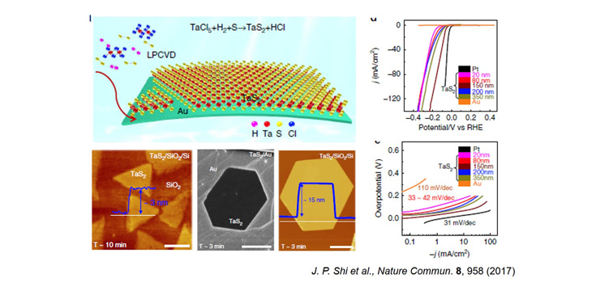
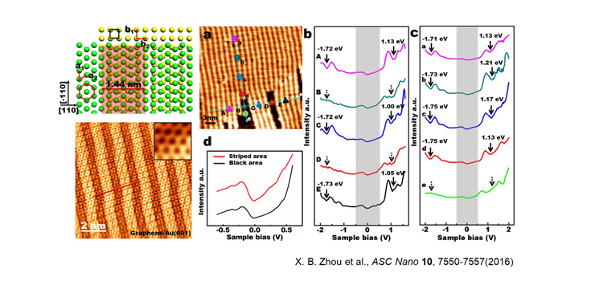
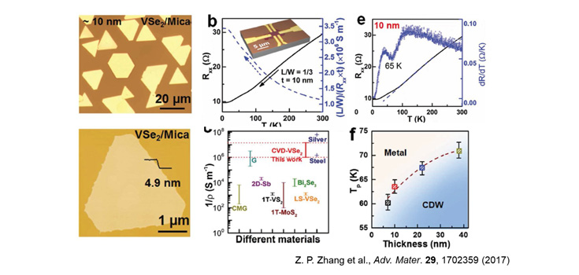

研究进展
Research
Congratulations to Zhepeng Zhang! Our paper‘Epitaxial Growth of Two-Dimensional Metal−Semiconductor Transition-Metal Dichalcogenide Vertical Stacks (VSe2/MX2) and Their Band Alignments’had been published on ACS Nano！
[2018-12-26]
Congratulations to Zhepeng Zhang! Our paper‘Epitaxial Growth of Two-Dimensional Metal−Semiconductor Transition-Metal Dichalcogenide Vertical Stacks (VSe2/MX2) and Their Band Alignments’had been published on ACS Nano！
[2018-12-26]
新闻动态
News
Congratulations to Zhepeng Zhang! Our paper‘Epitaxial Growth of Two-Dimensional Metal−Semiconductor Transition-Metal Dichalcogenide Vertical Stacks (VSe2/MX2) and Their Band Alignments’had been published on ACS Nano！
[2018-12-15]
我们的课题组网站成立啦！
[2018-01-14]